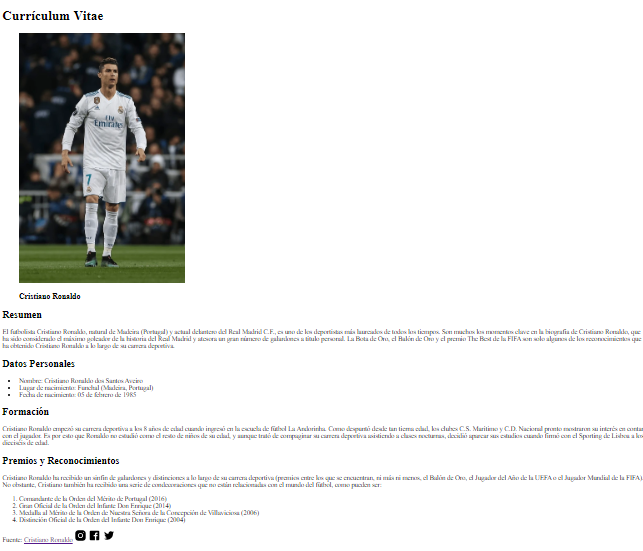

<div class="container">
    <section class="main">
        <table class="portafolio" sumary="Currículum Cristiano" width="100%" style="border:green 2px solid;">
            <thead>
            <tr>
                <th width="50%" style="border:green 2px solid;"><h2>Currículum</h2></th>
                <td style="border:green 2px solid;"></td>
            </tr>
        </thead>
        <tbody>
            <tr>
                <th width="50%" style="border:green 2px solid;"><h2>Proyecto 2</h2></th>
                <td style="border:green 2px solid;">&nbsp;</td>
            </tr>
            <tr>
                <th width="50%" style="border: green 2px solid;"><h2>Proyecto 3</h2></th>
                <td style="border: green 2px solid;">&nbsp;</td>
            </tr>
        </tbody>
        </table>
    </section>
</div>